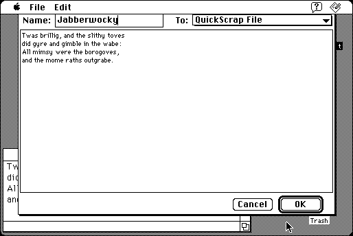

Download
QuickScrap1.21.zip (209K) QuickScrap 1.21 repackaged into a zipped hfs disk image and checksum file. The disk image can be mounted with Mini vMac.
QuickScrap1.21.sea.hqx (315K) QuickScrap 1.21 in the original format.
copyright: John V. Holder
mod date: Mar 15, 2000
license: shareware
last known url
(gone)
Send to and retrieve from scrap files with user definable hot keys. For System “7 on up”.

If you find these downloads useful, please consider helping the Gryphel Project, which hosts them.
Here are the md5 checksums for the downloads, signed with Gryphel Key 5:
--------- GRY SIGNED TEXT --------- 31f6f034a94c4a36674a5b14448eebc4 QuickScrap1.21.zip a90768970ef404a963c2426260d27108 QuickScrap1.21.sea.hqx ------- BEGIN GRY SIGNATURE ------- Gry/4Xa8CFcUzxdN/LUjKKh5fw7o8KTroDEAimRO88CBw1Cw724ynBVyqqkG5+uj ClBG6Gyc/YaHJyHPfEj3n4AEqiP5XLN9NY/cGbI4XK89/WcEtYfLduSw0EqJOICX Sk/1YWfiMAnWvvQU/ZmbAGCBZ7eUoyuA3QHIjl5fJMIGBzXlvC1VsqVAkgw4rPy+ -------- END GRY SIGNATURE --------